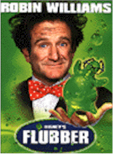
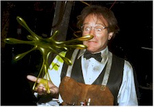
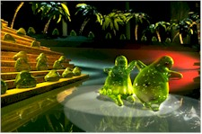

Contents | Features | Reviews | News | Archives | Store |
 |
|
| Movie Credits | Buy It! |
Flubber
Review by Carrie
Gorringe
Posted 26 November 1997
|  | Directed by Les Mayfield Starring
Robin Williams, Marcia Gay Harden, Screenplay by John Hughes and Bill Walsh |
Professor Philip Brainard (Williams) is a teacher at a college on the verge of bankruptcy and about to be consumed by the meanest and richest man in town, Chester Hoenicker (Raymond Barry), whose son (Wheaton) bears a grudge against Brainard for a failing grade in Chemistry (Dad’s money was supposed to guarantee Sonny Boy an "A"). Meanwhile, Brainard keeps forgetting his appointment to marry the College Dean, Sara Jean Reynolds (Harden); after three strikes, Brainard is out and his smarmy, well-connected and conniving rival (McDonald) is in like Flint. At first, Brainard seems oblivious to his impeding personal and professional demise, because he has developed a bright green goo with incredible powers, known as "flubber" (an abbreviation of the term, "flying rubber"). This flubber is no mere ectoplasm: it has personality, bearing more resemblance to a skittish sea otter than an ordinary chemical substance, and can form a mean conga line when necessary (all courtesy of ILM wizard Tom Bertino). Flubber also adds new meaning to the term "inertia"; when flubber begins to bounce, it really, really bounces. It can power the professor’s ’65 T-Bird, allowing it to take flight and scare the neighbors half to death. What more could a genius want?
Armed with this new power, Brainard has the idea of saving his relationship with Sara Jean and the championship basketball game for his College by attaching said flubber to the soles of the team’s basketball shoes. Unfortunately, Hoenicker has also become aware of the flubber’s existence, and prefers sending his two henchmen, aptly named Smith and Wesson (Levine) to relieve Brainard of his invention in lieu of a financial transaction. Can Brainard save the day and himself?
Great Oaks, the production company founded by former Disney executive Ricardo Mestres and teen-pic producer/director Hughes (The Breakfast Club, Pretty in Pink), seems to have decided that its mandate revolves around remakes of old Disney classics. Last year’s offering from the company was the live-action version of 101 Dalmatians, with Glenn Close in full psychopathic throttle as Cruella De Vil. Like its predecessor, Flubber (itself a remake of 1961’s The Absent-Minded Professor, with Fred MacMurray in the title role) suffers from a storyline and character development that is not so much skeletal as it is anorexic, and characters that are, at best, one dimensional (two side effects of a running time that is less than ninety minutes). 101 and Flubber are held together by virtue of astute casting in the most critical of roles: Close and Williams use these films to good advantage as real star turns. It’s true that these are both children’s films; however, there is more than enough to keep their parents from squirming away in boredom. Co-writer Hughes, working with the original script by the late Bill Walsh, has opted to jettison its quiet demeanor in favor of barely-suppressed madness (a Williams specialty). One never really wonders just who is more frenetic: Williams or the flubber. It was also an inspired idea to give the flubber, a rather lifeless substance in the original film, an injection or two or three of life; when a Busby Berkeleyesque dance sequence suddenly breaks out between drops of flubber, the narrative action stops, but the sequence is so breathtakingly fun that no one really notices the delay. If nothing else, the flubber and Williams can play comic foils to each other, thereby keeping the film bouncing right along, if you’ll pardon the expression.
That having been said, Flubber is a most likeable addition to the holiday movie schedule. It’s just the thing to follow the Thanksgiving turkey, taking far less effort to digest.
Contents | Features | Reviews | News | Archives | Store
Copyright © 1999 by Nitrate Productions, Inc. All Rights Reserved.